조치 방법 :
필요 리소스
●
소요시간: 3
시간
●
필요인원: 1
명
필요한 도구
●
Hexagonal
wrenches
●
Phillips screwdriver
●
Wrenches
●
Stepladder
부품 또는 소모품
●
New O-ring
●
New metal gasket
●
Tie wraps
●
Ethanol/deionized (DI) water solution
●
Cleanroom wipes (nonwoven)
개인 보호 장비
●
Safety mask
●
Safety glasses
●
Safety gloves
유지보수 준비
1. 질소를 사용하여 공정 튜브를 퍼지하여 공정 튜브나 진공 라인에 유해 가스가 남지 않도록
합니다.
2. 가스 흐름도 패널의 ATM 램프를 사용하여 진공 라인이 대기압으로 돌아갔는지 확인합니
다.
3. 진공 파이프를 제거하기 전에 펌프를 멈추려면:
3.1 가스 박스의 가스 박스 흐름도 패널에서 부스터 펌프(BP) 및 드라이 펌프(DP) 버튼을 누

릅니다.
3.2 부스터 펌프 및 건식 펌프 버튼의 램프가 꺼져 있는지 확인합니다.
4. 모든 가스 공급을 끄려면:
4.1 가스 공급 밸브를 닫으려면 가스 흐름도 패널의 스위치를 누릅니다. 열린 밸브는 불이 켜
진 스위치로 표시됩니다.
4.2 위험 가스 라인의 모든 핸드 밸브를 닫습니다.
4.3 위험 가스 밸브를 잠그고 태그를 붙입니다.
5. 메인 히터 전원을 끄려면:
5.1 전원을 끌 수 있을 때까지 수동으로 메인 히터 온도를 낮춥니다.
5.2 히터 스위치를 끕니다.
히터의 수냉선 손상을 방지하려면 히터 차단기를 끈 후 최소 12시간 동안 냉각수의 흐름을
멈추지 마세요.
6. 다음 히터가 실온에 있는지 확인합니다:
심한 화상을 방지하려면 유지보수를 하기 전에 히터를 실온으로 식히세요.
메인 히터 : WAVES 컨트롤러 온도 상태 화면 또는 EXCORE 미터 릴레이에서 확인합니다.
7. 시스템을 완전히 종료합니다.
8. 전원 박스 메인 차단기를 잠그고 태그를 붙입니다.
9. 진공 라인 커버를 제거합니다.
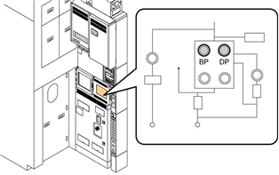

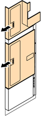
10. 청소기 커버를 제거합니다.
패널 히터 제거하기
11. 패널 히터의 금속 피팅을 느슨하게 합니다.
12. 패널 히터를 제거합니다.
13. 체인 클램프 주변의 단열재를 제거합니다.
분기 파이프 제거
14. 진공 파이프 본체를 렌치로 고정하고 진공 파이프에 부착된 모든 분기 파이프 너트를 두
번째 렌치로 풀어줍니다.
15. 너트를 제거하고 진공 파이프에서 분기 파이프를 제거합니다.
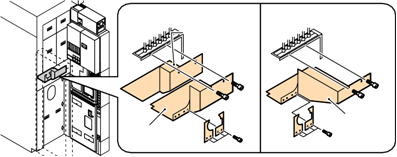
Standard Specification
Scavenger safety
cover
N2 Purge Box Specification
Scavenger
cover
Scavenger
cover
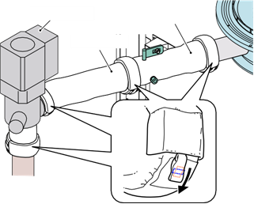
Main valve
#1 vacuum
pipe
#2 vacuum
pipe
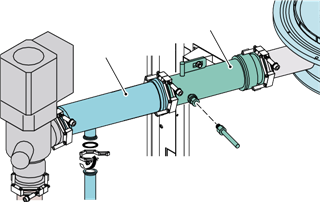
#1 vacuum
pipe
#2 vacuum
pipe
16. 분기 파이프 나사에서 금속 가스켓을 제거합니다.
#1 진공 파이프 제거
17. 체인 클램프 A를 제거하여 매니폴드와 #1 진공 파이프를 고정합니다.
18. 오링 시트를 제거합니다.
가스 누출로 인한 부상을 방지하기 위해 O-링 시트를 제거할 때 #1 진공 파이프의 밀봉 표면
을 긁지 않도록 주의하세요.
19. 체인 클램프 B를 제거하여 #1 진공 파이프와 #2 진공 파이프를 고정합니다.
20. 오링 시트를 제거합니다.
21. #1 진공 파이프를 고정하는 너트를 제거하고 #1 진공 파이프를 제거합니다.
#2 진공 파이프 제거하기
22. #2 진공 파이프를 지지하는 동안 #2 진공 파이프와 메인 밸브를 고정하는 체인 클램프를
제거합니다.
#2 진공 파이프를 떨어뜨리지 않으려면 작업할 때 손으로 파이프를 지지하세요. 파이프는 나
사로 프레임에 고정되지 않습니다. 체인 클램프를 제거하면 파이프를 쉽게 제거할 수 있습니
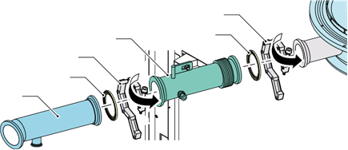
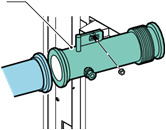
다.
23. #2 진공 파이프와 O링 시트를 제거합니다.
가스 누출로 인한 부상을 방지하기 위해 O-링 시트를 제거할 때 #2 진공 파이프의 밀봉 표면
을 긁지 않도록 주의하세요.
메인 CKD 밸브 제거
부상을 피하려면 두 사람과 함께 다음 작업을 수행하세요.
24. 고무 히터 커넥터를 제거합니다.
25. 메인 CKD 밸브에 연결된 공기 파이프를 제거합니다.
26. 메인 CKD 밸브를 라인 트랩에 부착하는 체인 클램프 D를 제거합니다.
27. 오링 시트를 제거합니다.
가스 누출로 인한 부상을 방지하기 위해 O링 시트를 제거할 때 메인 CKD 밸브의 밀봉 표면
을 긁지 않도록 주의하세요.
28. 메인 CKD 밸브를 고정하는 볼트를 제거하고 메인 CKD 밸브를 제거합니다.
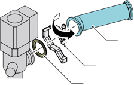
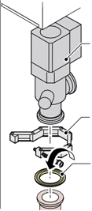
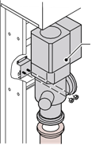
29. 메인 CKD 밸브를 안전한 곳에 두세요.
라인 트랩 제거하기
30. 라인 트랩을 고정하는 너트를 제거합니다.
31. 라인 트랩을 #3 진공 파이프에 부착하는 체인 클램프 E를 제거합니다.
32. 오링 시트를 제거합니다.
가스 누출로 인한 부상을 방지하기 위해 O-링 시트를 제거할 때 라인 트랩의 밀봉 표면을 긁
지 않도록 주의하세요.
33. 라인 트랩의 하단을 사용자 쪽으로 기울입니다.
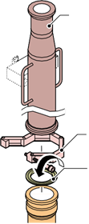
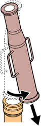
Line trap
1
2
34. 라인 트랩을 당신 쪽으로 당겨서 아래로 내리세요.
#3 진공 파이프 제거
35. 체인 클램프 F를 제거하여 #3 진공 파이프와 서브 팹 라인을 고정합니다.
36. #3 진공 파이프를 제거합니다.
37. 오링 시트를 제거합니다.
가스 누출로 인한 부상을 방지하기 위해 O-링 시트를 제거할 때 #3 진공 파이프의 밀봉 표면
을 긁지 않도록 주의하세요.
라인 트랩 설치
38. 새 오링을 준비합니다.
39. 에탄올/DI 수용액으로 O링 시트를 청소합니다.
40. 새 오링을 오링 시트에 놓습니다.
41. 에탄올/DI 수용액을 사용하여 라인 트랩 플랜지, 메인 밸브 플랜지 및 #3 진공 파이프
플랜지의 밀봉 표면을 청소합니다.
42. 라인 트랩을 설치하려면:
42.1 라인 트랩 플랜지와 #3 진공 파이프 플랜지의 밀봉 표면에 O-링 시트를 설정합니다.
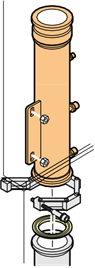
42.2 다음 그림과 같이 #3 진공 파이프에 라인 트랩을 설치합니다.
42.3 라인 트랩 플랜지와 메인 밸브 플랜지의 밀봉 표면에 O-링 시트를 설정합니다.
43. 체인 클램프를 조여 라인 트랩을 #3 진공 파이프와 메인 밸브를 라인 트랩에 연결합니다.
44. 너트를 조여 라인 트랩을 고정합니다.
45. 진공 라인 커버를 설치합니다.
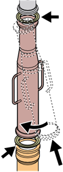

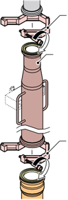
Chain
Line trap
Chain
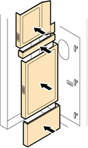
46. 메인 차단기에서 잠금 장치와 태그아웃 장치를 제거합니다.
47. 시스템을 재시작합니다.
48. 누출 점검을 통해 가스 누출이 없는지 확인합니다.
49. 가스 누출이 없는지 확인한 후, 위험 가스 라인의 핸드 밸브에서 잠금 장치와 태그아웃
장치를 제거합니다.